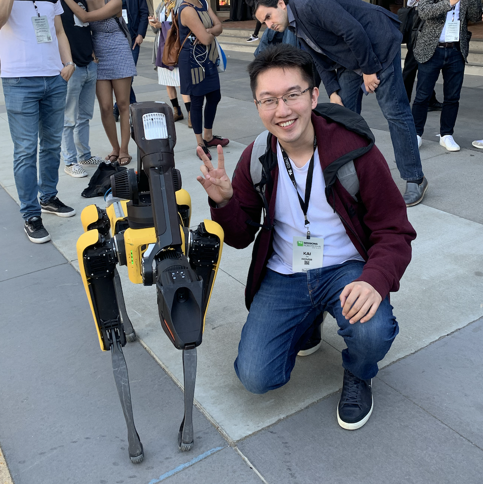

Kai Jia

Welcome! I'm a researcher working on human-object interaction, 3D vision, and physical reasoning.
Publications
-
Kai Jia*, Hongwen Zhang, Liang An, Yebin Liu.
"Delving Deep into Pixel Alignment Feature for Accurate Multi-view Human Mesh Recovery"
AAAI 2023
[Project Page]
-
Kai Jia*, Tengyu Liu*, Yixin Zhu, Mingtao Pei, Siyuan Huang.
"PrimHOI: Compositional Human-Object Interaction via Reusable Primitives"
ICCV 2025
[Project Page]
Contact: kajia@umich.edu